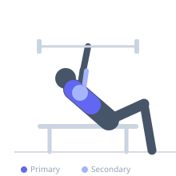
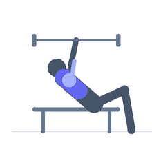

Exercise guide / Incline Barbell Bench Press
Incline Barbell Bench Press
The incline barbell bench press is performed on a bench set to 30–45 degrees, shifting emphasis toward the clavicular (upper) head of the pectoralis major and the anterior deltoid. It is a staple exercise for developing the upper chest and creating a fuller, more complete pectoral appearance.
Primary muscles
pectoralis major clavicular
Secondary muscles
pectoralis major sternal
deltoid anterior
triceps long head
triceps lateral head
Stabilizers
supraspinatus
subscapularis
Equipment
Standard Barbell
Adjustable Bench (Incline / Decline)
Optional
Power Rack (Squat Cage)


Starting position
- Set an adjustable bench to 30–45 degrees and position it inside a rack. Lie back with eyes under the bar, shoulder blades retracted, and feet flat on the floor. Grip the bar slightly wider than shoulder width.
Setup
- Set bench to 30–45 degrees — higher angles increase anterior deltoid involvement at the expense of pectoral activation. Position the barbell in the rack so it unracks with arms nearly extended.
Steps
- Unrack the bar and position it directly over your upper chest with arms extended.
- Lower the bar under control to your upper chest, keeping elbows at about 60–75 degrees from your torso.
- Touch the bar lightly to your upper chest without losing upper back tension.
- Press the bar back to the starting position, exhaling as you push.
Coaching cues
- Think about pressing the bar up and slightly back toward the rack
- Keep the upper back welded to the bench throughout the set
Breathing
- Inhale and brace before the descent. Exhale on the concentric press.
Range of motion
- Lower the bar until it touches the upper chest. Press to full extension without hyperextending the elbows.
Tempo
- 2-1-1-0
Common mistakes
- Setting the bench too steep (above 45 degrees), turning the exercise into a shoulder press
- Letting the bar drift down to the lower chest — keep it at the clavicular region
- Losing upper back tightness as the weight gets heavy
Safety
- Use a spotter or set safety bars in the rack
- A 30-degree incline is generally safer for the shoulder than 45 degrees
Training
- strength: 3–6 reps
- hypertrophy: 8–12 reps
- endurance: 15–20 reps
- strength: 3–5 sets
- hypertrophy: 3–4 sets
- endurance: 2–3 sets
- Rest: {'strength': 180, 'hypertrophy': 90, 'endurance': 45}